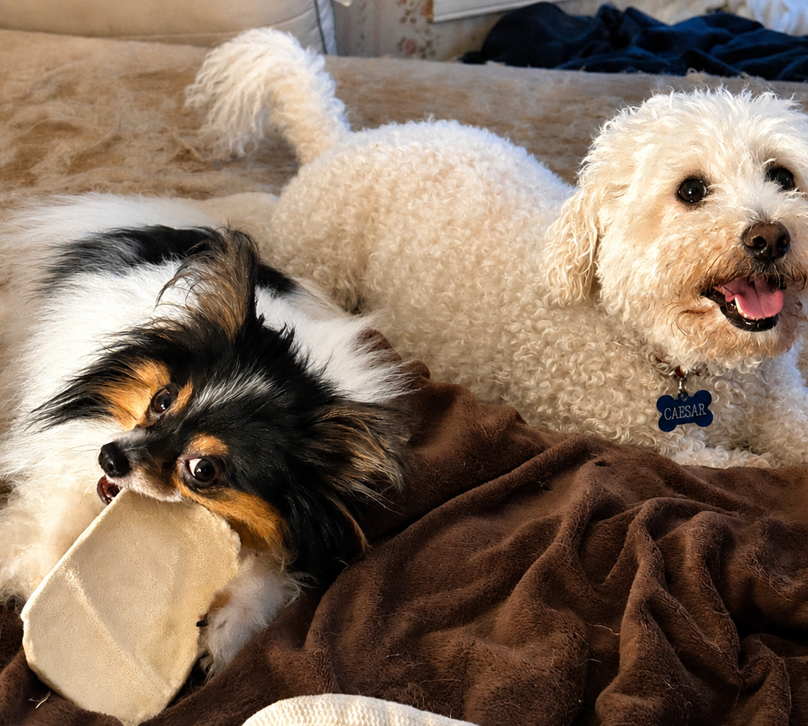
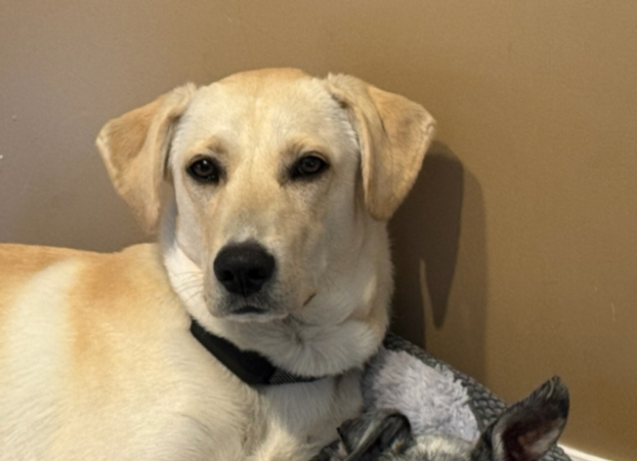
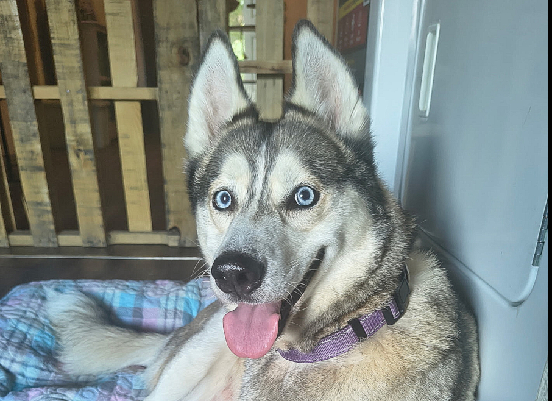
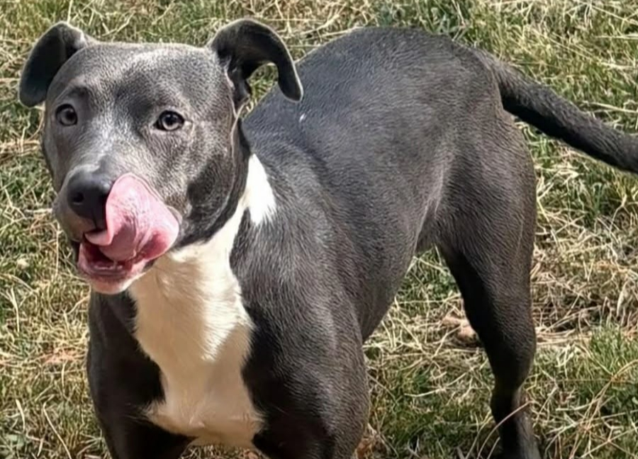
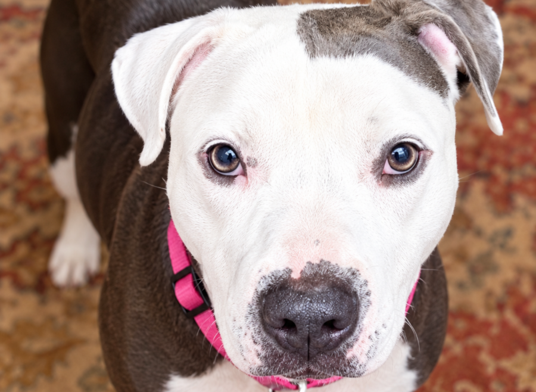
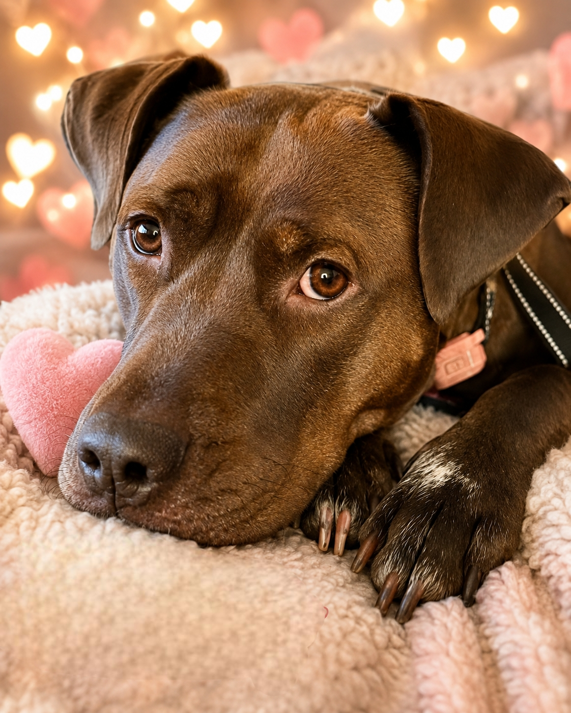
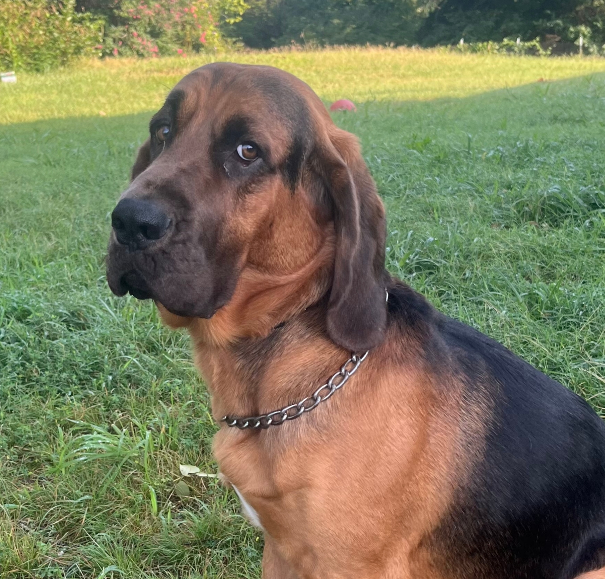

♡ 🐾
Foster journey
Mia
The first dog welcomed into the Second Leash foster program. Her story shows what it means to keep a place in the family while life takes an unexpected turn.
Every pup has a person. Every person has a story.
Behind every dog is a bond worth protecting. These are the families Second Leash has helped through temporary foster care and reunion.
Stories of care and hope
Our foster families offer a safe place for dogs while their people navigate a difficult chapter. These stories are shared with care, without unnecessary details about the people we serve.
The stories below reflect the information in our Meet Our Pups booklet. Placement status can change; contact Second Leash for the latest information.
Foster journey
The first dog welcomed into the Second Leash foster program. Her story shows what it means to keep a place in the family while life takes an unexpected turn.

Together in foster care
These two companions are being cared for together in a Maryland foster home while their person works toward reunification.

Foster journey
Rumi has a caring temporary home and an ongoing connection with his person as they work toward being together again.

Foster journey
Luna found a safe temporary home while her person focused on an important period of recovery. Their reunion remains the goal.

Foster journey
Precious is enjoying a loving foster home while her person works toward stable housing and the next chapter together.

BYOF program
Bubby was the first participant in our Bring Your Own Foster program. Second Leash helps with supplies and care while his family works toward reunion.
Military family
Rin's temporary foster arrangement helps support a military family during deployment, with reunification planned when her person returns.
The reason we do this
Reunion stories
These happy endings show what temporary foster care makes possible.

Reunited
After a difficult separation, Bullwinkle returned to his person on September 4, 2026.

Reunited
Nova's short Second Leash journey ended with a joyful return to a familiar, loving home.

Reunited
After three weeks of temporary foster care during a housing transition, Watson went home to his person.
A temporary crisis shouldn't have to mean a permanent goodbye. Whether someone is seeking safety, treatment, medical care, or stable housing, Second Leash works to preserve the human–animal bond through compassionate temporary foster care.
We protect the privacy and dignity of the people we serve, and we share their circumstances only with appropriate permission.
Open your home to a dog temporarily, or support the care that keeps families connected.